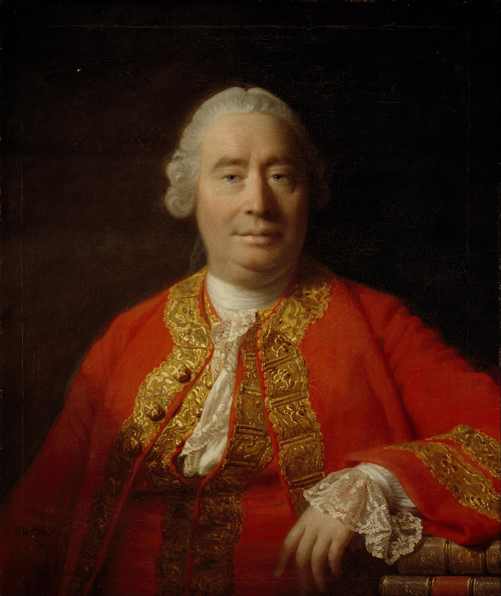
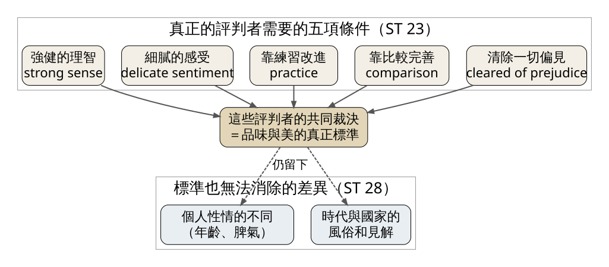
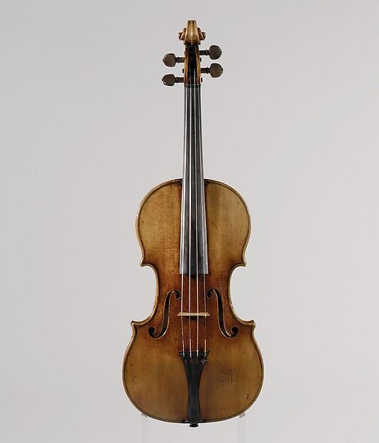
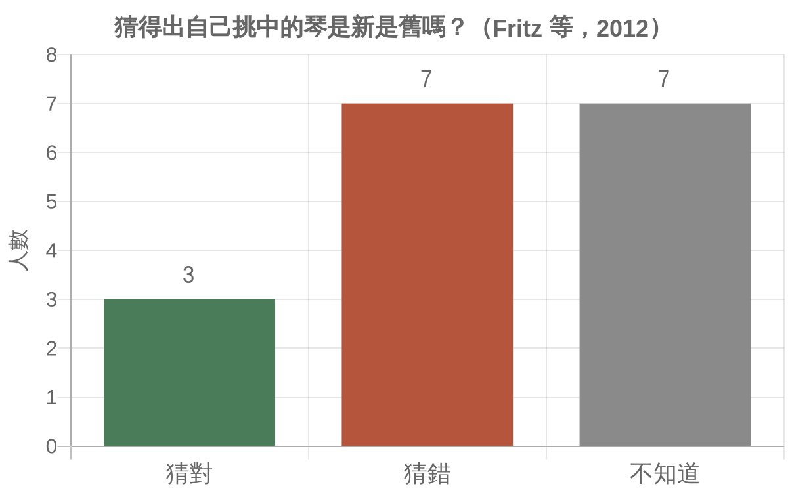
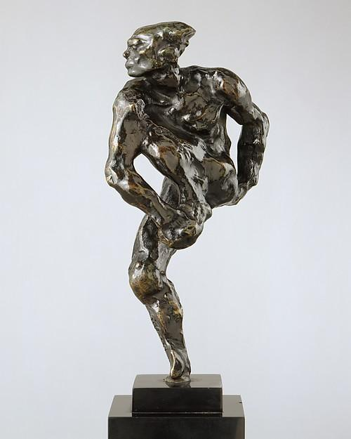

David Hume 在 1757 年承認美是心裡的感受，卻仍主張品味有標準：標準不在多數人的投票，而在一群受過訓練、沒有偏見的評判者長時間下來的共同裁決。學會這個想法，你就能分辨「我喜歡」和「這比較好」是兩句不同的話，也知道一次盲測能證明什麼、不能證明什麼。
經典理論（Hume 轉述的小說情節）：Hume（見圖 1）在〈Of the Standard of Taste〉裡講了一個從《唐吉訶德》借來的故事。Sancho Panza 跟人吹噓自己天生會品酒，因為他家族裡有兩位親戚很厲害。有一次，村民請這兩位親戚品嚐一大桶酒。第一位嚐了說酒很好，只是有一點皮革味；第二位也說酒很好，只是帶點鐵味。旁人笑他們挑剔。等到酒喝完、把桶子倒空，桶底躺著一把舊鑰匙，鑰匙上綁著一條皮繩（ST 15）。這段情節出自 Cervantes《唐吉訶德》第二部（1615）第十三章，Sancho 和林中騎士的侍從一邊喝酒一邊閒聊時說的。
這個故事好用的地方在桶底的鑰匙。兩位親戚的味覺被嘲笑時，旁人可以說「口味因人而異」；鑰匙一撈出來，誰的舌頭比較準就有了答案。Hume 想問的是：音樂、詩、繪畫裡，有沒有類似那把鑰匙的東西？

圖 1｜Allan Ramsay 為 Hume 畫的肖像，作於〈論品味的標準〉出版九年後。來源：Allan Ramsay，《David Hume, 1711–1776. Historian and philosopher》，1766，油彩畫布，蘇格蘭國家肖像館藏（PG 1057）。授權：Public domain，來源頁面
史料：〈Of the Standard of Taste〉最早收在 Hume 的《Four Dissertations》（倫敦，A. Millar，1757），同書另有〈The Natural History of Religion〉、〈Of the Passions〉、〈Of Tragedy〉三篇。後來 Hume 把它編進《Essays, Moral, Political, and Literary》。以下段落編號 ST 依 Hume Texts Online 的版本。
經典理論：以下都是 Hume 的主張。
先承認美在心裡。Hume 寫道：「Beauty is no quality in things themselves」，它只存在於觀看者的心裡，每個人感受到的美都不同（ST 7）。這句話常被單獨引用，彷彿 Hume 就此說完了。他接著立刻反過來：如果有人主張 Ogilby 和 Milton 的才華一樣高，或 Bunyan 和 Addison 一樣好，大家都會覺得這人在胡說，這就像說小土丘和 Tenerife 的火山一樣高（ST 8）。John Ogilby 是十七世紀的翻譯者，Milton 寫了《失樂園》。換成今天的例子，大概像有人堅持某支手機鈴聲和 Bach 的《馬太受難曲》一樣偉大。人人嘴上說品味沒得爭，碰到這種極端比較，卻沒人真的這樣相信。
時間是一種測試。Hume 提出一個經驗上的線索：同一部 Homer，兩千年前在雅典和羅馬受人喜愛，到今天的巴黎和倫敦還是受人讚賞（ST 11）。氣候、政府、宗教、語言都換過了，作品仍然站得住，表示它打動的是人心裡比較穩定的部分。一時的流行、權威的吹捧、對作者的偏愛，都撐不過這麼長的時間。
五項條件。那麼誰的判斷可以當作桶底的鑰匙？Hume 列了一句很長的條件：強健的理智，結合細膩的感受，經由練習改進，透過比較完善，並且清除一切偏見；這樣的評判者，他們的「joint verdict」才是品味與美的真正標準（ST 23，見圖 2）。

圖 2｜Hume 的品味標準：五項條件合起來產生「共同裁決」，但標準仍留下兩種無法消除的差異。來源：本課程依 David Hume〈Of the Standard of Taste〉（1757）ST 23、ST 28 繪製。
標準消除不了的部分。Hume 沒有說所有分歧都有對錯。他留下兩個來源：一是個人性情不同，二是我們所處時代與國家的風俗和見解（ST 28）。他舉例說，熱情的年輕人比較容易被愛情與溫柔的意象打動，年紀大的人比較喜歡談處世與節制的作品；二十歲時最愛 Ovid，四十歲換成 Horace，五十歲也許是 Tacitus（ST 29）。這種偏好沒有誰錯，標準只負責處理另一類分歧，也就是那些因為不夠細膩、沒練習、沒比較或有偏見而產生的錯判。
Hume 自己也看到這個理論的難處：這樣的評判者要去哪裡找？怎麼分辨真假？問題好像又繞回原點（ST 24）。他的回答是，這些是「questions of fact, not of sentiment」：某人是否細膩、是否有偏見，可以爭論，可以拿證據來辯，就像其他事實問題一樣；而且大家都同意這樣的人格是有價值的（ST 25）。
小提琴世界有一個流傳了很久的信念：Antonio Stradivari 和 Guarneri「del Gesù」在十八世紀做的琴，音色是後人做不出來的。這些琴的身價可以到數百萬美元以上。這正好可以拿來檢驗 Hume 的五項條件，因為頂尖演奏者應該是細膩、有練習、有比較的人；問題只剩下第五項，偏見（見圖 3）。

圖 3｜Stradivari 在 Cremona 製作的「Antonius」小提琴，楓木、雲杉、烏木。這把琴沒有參加下文的實驗，放在這裡讓你看看傳說中的「古義大利琴」長什麼樣子。來源：Antonio Stradivari，「Antonius」Violin，1711，大都會藝術博物館藏（34.86.1a）。授權：Public domain（The Met Open Access），來源頁面
實證研究：2010 年印第安納波利斯國際小提琴大賽期間，法國聲學研究者 Claudia Fritz、美國製琴師 Joseph Curtin 等人找來 21 位有經驗的小提琴家，做了一場雙盲測試。琴共六把：兩把 Stradivari（約 1700 年、約 1715 年）、一把 Guarneri「del Gesù」（約 1740 年），三把古琴合計價值約一千萬美元；另外三把是不同製琴師做的新琴。演奏者戴著改裝過的焊工護目鏡，房間燈光調暗，讓他們看不出琴的樣子；每把琴的腮托下還放了香味，掩蓋古琴的氣味。知道琴身分的研究者躲在屏風後，由另一批同樣戴著護目鏡的人把琴遞出去。
結果發表在 2012 年的《PNAS》：最受喜愛的是一把新琴，最不受喜愛的是那把約 1700 年的 Stradivari。21 人裡只有 8 人選古琴當作「想帶回家」的那把。新琴在好不好拉、反應快不快兩項的評分明顯較高，音色與音量投射兩項則沒有顯著差異。研究者再問他們：你選的那把是新琴還是古琴？17 人作答，3 人猜對，7 人猜錯，7 人說不知道（見圖 4）。

圖 4｜印第安納波利斯實驗中，演奏者猜自己挑中的琴是新是舊。來源：本課程依 Fritz, Curtin, Poitevineau, Morrel-Samuels & Tao, “Player preferences among new and old violins”, PNAS 109(3), 2012 的數據繪製。
實證研究：印第安納波利斯那次只有六把琴，每人約一小時，地點在旅館房間。同一團隊 2012 年在巴黎擴大再做一次，2014 年同樣發表在《PNAS》：10 位知名獨奏家，盲測六把古義大利琴（其中五把是 Stradivari）和六把新琴，分兩段各 75 分鐘，一段在排練室，一段在 300 席的音樂廳。請他們挑一把琴取代自己的琴去巡演，10 人裡有 6 人挑了新琴；整體最受喜愛的是一把新琴；而他們分辨新舊的能力沒有高於亂猜。
拿 Hume 的條件來讀這兩個實驗，可以看到三件事。以下是本課程的分析，研究者並沒有引用 Hume。
細膩的感受是真的。演奏者並不是什麼都分不出來。他們能清楚說出哪把喜歡、哪把不喜歡，也能說出喜歡的理由，像是好拉、反應快。這就是 Sancho 親戚的舌頭。
偏見藏在「知道」裡。一旦知道眼前是 Stradivari，價格、歷史、名人用過的故事會一起進入判斷。Hume 要評判者「清除一切偏見」，護目鏡和香味做的正是這件事：把作品以外的資訊擋在門外。實驗之後，「古琴必然比較好」這個判斷少了一個支撐。
剩下的是個人差異。研究者在 2012 年的結論裡說，演奏者各自的口味差異，和個別樂器之間的差異，比「新琴對古琴」這個大分類重要得多。這很接近 Hume 在 ST 28 留下的那一塊：標準去掉了錯判，卻沒有讓所有人選同一把琴。
這兩個實驗也有範圍限制。它們測的是演奏者短時間試奏的感受，不是聽眾在音樂廳裡的評價，樣本也只有 21 人和 10 人。它們能說「在這些條件下，頂尖演奏者分不出新舊」，不能說「所有古琴都不比新琴好」。
史料（依二手文獻）：1912 年 5 月 29 日，Diaghilev 的俄羅斯芭蕾舞團在巴黎夏特雷劇院首演《L'Après-midi d'un faune》（牧神的午後），編舞與主演是 Vaslav Nijinsky，音樂是 Debussy 1894 年的《牧神午後前奏曲》。演出過程中觀眾一動也不動，到落幕時才爆發，有人喝采，有人吹口哨，還有人打了起來；Diaghilev 之後說服 Nijinsky 修改最後一段動作。隔天 5 月 30 日，《Le Figaro》總編輯 Gaston Calmette 親自在頭版撰文，用他自己的文章取代原本舞評的位置，指責這支舞下流、冒犯公共道德。接著《Le Matin》刊出以雕塑家 Auguste Rodin 署名的文章替 Nijinsky 辯護，稱讚他用身體表達心靈，說那是古希臘美的理想。以上依 EBSCO Research Starters〈L'Après-midi d'un faune Scandalizes Parisian Audiences〉，該文參考 Richard Buckle《Nijinsky》（1970）等書。該文也提到 Calmette 真正反對的是法俄同盟，這一點本課程未能另行查證。

圖 5｜Rodin 在《牧神的午後》風波那一年塑造的舞者小像，大都會藝術博物館的標題寫作「Nijinsky (?)」，帶著問號。來源：Auguste Rodin，《Nijinsky (?)》，1912 年塑造，1959 年鑄造，銅、大理石底座，大都會藝術博物館藏（1991.446）。授權：Public domain（The Met Open Access），來源頁面
用 Hume 的話說，Calmette 和 Rodin 都是當時最有分量的評判者，卻給出相反的裁決（見圖 5）。如果 Calmette 的判斷裡混進了政治或道德上的立場，那就是 Hume 說的偏見；如果是 1912 年巴黎觀眾對芭蕾「應該長什麼樣」的期待，那就屬於「時代與國家的風俗」。一場首演分不出哪一種。
時間後來接手了這個測試。史料：Nijinsky 在 1915 年用自己發明的舞譜記下了這支舞，這份舞譜長年沒有人讀得懂。Ann Hutchinson Guest 與 Claudia Jeschke 把它解讀出來，轉寫成拉邦舞譜，1991 年出版為《Nijinsky's Faune Restored》（Gordon and Breach）。一支首演隔天被大報總編輯痛罵的短舞，七十多年後有人花多年力氣去破解它的原始動作，這是 Hume 說的「Homer 測試」在舞蹈上的版本。小提琴的盲測把偏見擋在當下，舞蹈的例子則讓時間慢慢把偏見濾掉。
誤解一：Hume 主張「美在觀者眼中」，所以品味沒有對錯。Hume 確實寫了美不是事物本身的性質（ST 7），但整篇文章的目的是反駁「所以沒有標準」這個結論。他認為感受雖然在心裡，人心的構造有共通之處，所以有些判斷比另一些更準。
誤解二：品味的標準就是多數決或銷售排行。Hume 的標準是少數合格評判者的共同裁決，加上長時間的考驗。一首歌某週播放次數最高，只說明它當週最多人聽，Hume 不會把這當成標準。
誤解三：小提琴盲測證明 Stradivari 沒什麼了不起。這兩個實驗證明的是：在雙盲、短時間試奏的條件下，頂尖演奏者分不出新舊，也沒有普遍偏好古琴。它沒有證明每一把古琴都不好；研究者自己強調的是個別樂器和個人口味的差異。
誤解四：Hume 認為所有分歧最終都會被標準解決。他明確保留了兩種無法消除的差異：個人性情與時代風俗（ST 28–29）。在這兩個範圍內，喜歡情歌或喜歡哲理詩都不算錯。
看（5 分鐘）：打開手機的音樂播放紀錄或歌單，挑出你最常聽的十首歌。在紙上替每一首寫一個字母：A＝我第一次聽就喜歡，不知道是誰唱的；B＝我先知道是誰（某位歌手、朋友推薦、某部影集），才開始聽。數一數 A 和 B 各有幾首。
做（10 分鐘）：
回顧（5 分鐘）：
來源 | 來源類型 | 查核日期 |
David Hume, “Of the Standard of Taste”（Hume Texts Online，Essays, Moral, Political, and Literary, Essay XXIII）：ST 7、8、11、15、20、21、23、24、25、28、29 | 經典理論 | 2026-11-01 |
Hume, Four Dissertations（1757、1777 版目錄，Hume Texts Online）：收錄〈Of the Standard of Taste〉 | 史料 | 2026-11-01 |
實證研究 | 2026-11-01 | |
實證研究 | 2026-11-01 | |
實證研究 | 2026-11-01 | |
EBSCO Research Starters, “L'Après-midi d'un faune Scandalizes Parisian Audiences”：首演日期、Calmette 與 Rodin 的文章、觀眾反應 | 史料（依二手文獻） | 2026-11-01 |
史料 | 2026-11-01 | |
史料（依二手文獻） | 2026-11-01 | |
圖片授權 | 2026-11-01 | |
圖片授權 | 2026-11-01 | |
圖片授權 | 2026-11-01 |
延伸閱讀：〈Of the Standard of Taste〉全文不長，先讀 ST 15 的酒桶故事和 ST 23 的五項條件，再讀 ST 28 到結尾，就能看到 Hume 把哪些分歧交給標準、哪些留給個人。